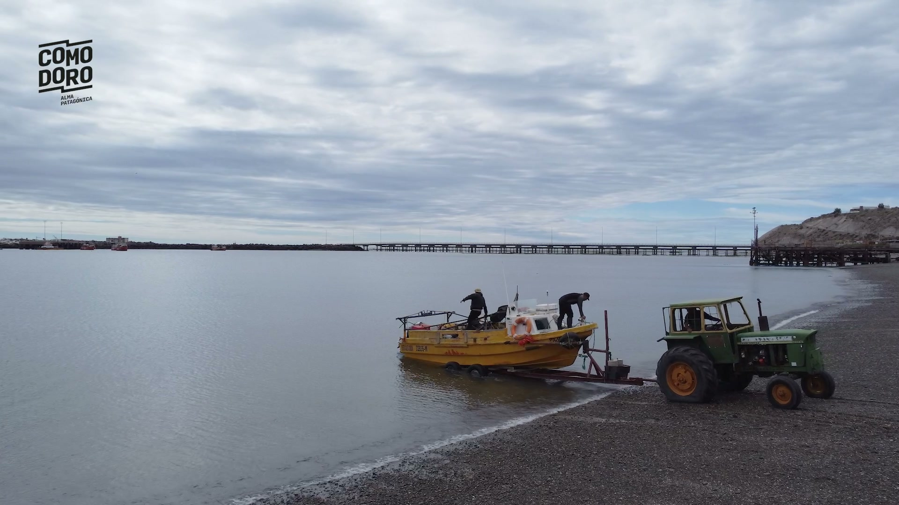
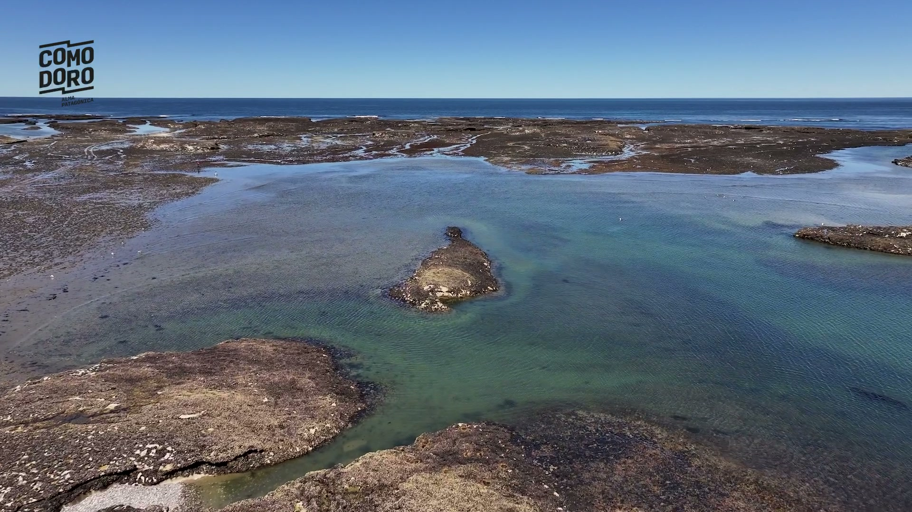
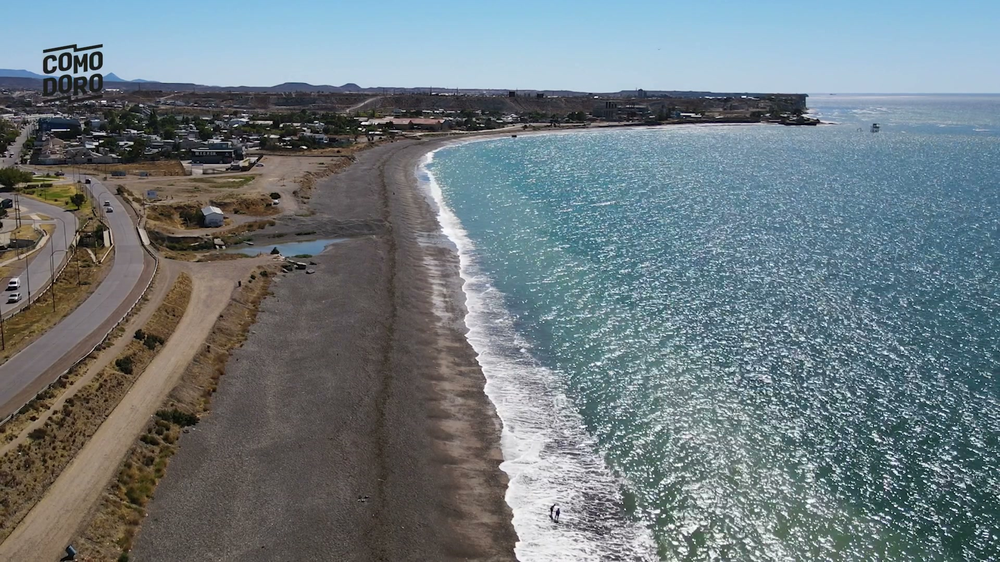
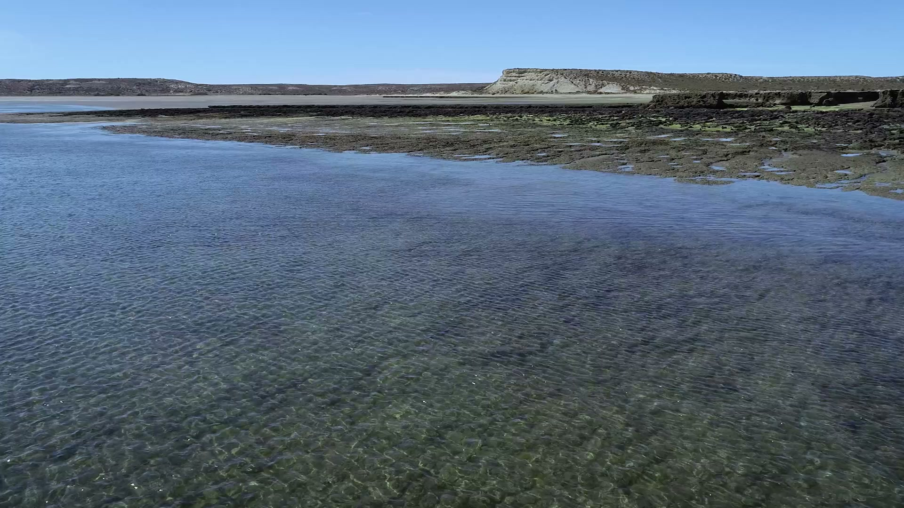

Expediciones realizadas
Ciudadanos participantes
Proyectos científicos
Programas educativos
* Valores de referencia – actualizar con datos reales
XPLORAR está conformada por un equipo multidisciplinario de profesionales unidos para desarrollar proyectos de investigación científica, programas de educación, formación y participación ciudadana, así como la divulgación de la ciencia en relación a la conservación, conocimiento y protección del patrimonio natural y cultural marítimo y subacuático argentino.
Nuestras áreas de trabajoLos ejes que sostienen nuestra misión de explorar, conocer y proteger
Campañas científicas en arqueología subacuática, biología marina y conservación del patrimonio natural argentino.
Cursos, talleres y capacitaciones en buceo científico, fotografía subacuática y biología marina.
Expediciones nacionales e internacionales donde la ciencia y la aventura son los protagonistas.
Programas de participación que conectan personas con la naturaleza y la investigación científica.
Viajes y destinos nacionales e internacionales donde la ciencia y los programas de ciencia ciudadana son los protagonistas. Sentite parte de exploraciones reales.
Conocer másImágenes y galería visual de campañas científicas arqueológicas subacuáticas, biología marina, conservación y relevamientos de reconocimiento.
Ver galeríaCursos, talleres y capacitaciones en buceo científico, patrimonio cultural subacuático, arqueología subacuática, biología marina y fotografía.
Ver cursosNotas, talleres, programas de desarrollo y experiencias de ciencia ciudadana que acercan la naturaleza y la investigación a la comunidad.
Conocer másProducciones audiovisuales sobre naturaleza, exploración, conservación, arqueología subacuática, biología marina, pesca artesanal y profesiones del mar.
Ver produccionesConsultoría ambiental, estudios de impacto, relevamientos subacuáticos, scouting en zonas remotas, registro audiovisual y gestión de emergencias.
Ver serviciosCapacidad técnica y logística para proyectos en entornos exigentes
Registros visuales de nuestras campañas científicas




¿Querés ser parte de la próxima expedición?
Súmate¿Tenés un proyecto, una idea o querés ser parte de nuestra comunidad científica? Escribinos.